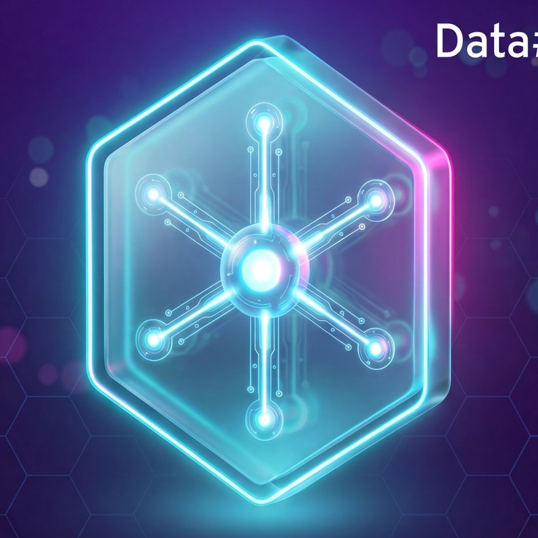

Built on Microsoft innovation. Brought to life through the Data#3 AI Factory — our capability-led operating model for enterprise AI, powered by dedicated squads of AI specialists who run with you, sprint by sprint.

Agentic AI is the next evolution of generative AI. Agents don't just respond — they act. They autonomously plan, retrieve, reason and execute multi-step tasks across your business, unlocking new levels of productivity and innovation across your organisation.
Pair every employee with domain-specific AI agents that work alongside them, accelerating decisions and removing busywork.
Move beyond rule-based RPA. Let intelligent digital workers handle multi-step processes that previously needed human judgement.
Scale productivity across the enterprise with end-to-end workflows that orchestrate themselves under your governance.
Turn AI ambition into operating capability. Replace one-off proofs of concept with a structured path to production agents at enterprise scale.
The Data#3 AI Factory follows an Envision–Transform–Operate framework — the lifecycle for enterprise AI services at Data#3. Six operational phases parented under three executive-level phases — two phases under each of Envision, Transform and Operate. ETO is iterative, not linear: you can enter at any phase based on your AI maturity, and each phase is delivered by a dedicated squad on a sprint cadence.
AI strategy and roadmap, readiness assessment, use-case ideation and value hypothesis. Indicative ROI ±50%.
PoC + PoV. Experiment, tune, validate solution options and refine the business case. Refined ROI ±25%.
Architect the production solution. Governance, security & compliance consulting, operating-model and process design. Refined ROI ±10%.
Production development, RAG and knowledge integration, multi-agent orchestration, security hardening and testing through to go-live.
Change management, user training, champion network development and continuous backlog capture as adoption scales.
Manage agents and platforms, tune for performance, run security and compliance audits, and feed the innovation pipeline.
Every engagement with the Data#3 AI Factory is shaped to deliver tangible business outcomes — not just slideware. Outcomes scale with squad capacity, not statements of work.
The Data#3 AI Factory delivers capability-as-a-service across five tiers — from a compressed discovery sprint to a fully managed AI capability. Each tier maps to where you are in your AI journey, and you can graduate between tiers as your maturity grows. The same dedicated squad delivers your first Lean Sprint and your hundredth production agent.
A compressed discovery + proof-of-value to validate one narrowly scoped AI use case. Explicitly exploratory — not a path to production. Best for organisations testing capability-as-a-service without long commitment.
The minimum sensible pre-build motion. Agent architecture, orchestration design and target-state roadmap for customers building multi-agent ecosystems. Strategy + design cannot fit into a single sprint.
Productionise one or two proven use cases — observability, integration, handover. Six weeks is the absolute floor; three sprints is the entry point, not the midpoint.
AI & agent governance, guardrails, risk register and CPS 230 control mapping. Non-optional and non-trivial — positioned as parallel or embedded in another tier, not as a small standalone advisory.
The fully managed AI capability — the only tier that truly matches the AI Factory idea. Persistent named squad on a rolling commit, with an innovation + operate loop running continuously against committed capacity.
Data#3's AI agents are built around four essential components — the building blocks that make the difference between a clever demo and a trusted enterprise capability.
Agents grounded in trusted, authoritative data through retrieval-augmented generation with vetted sources, citation and source attribution, and hallucination prevention.
Defined action scope with human-in-the-loop requirements for high-risk operations and 1,400+ pre-built enterprise connections to your existing systems.
Confidence-based decision making — agents know when to act autonomously and when to escalate to a human for approval. No silent failures.
Multi-channel deployment across Teams, web and custom interfaces with full audit trails and identity propagation end-to-end.
The Agentic Foundation is Data#3's canonical five-layer reference stack on Microsoft AI. Every sprint lands on the same foundation, so your first pilot and your hundredth agent share the same guardrails, the same telemetry and the same path to production.
Security, compliance and governance are baked into every layer — not bolted on at the end. Each layer is independently hardened and continuously evaluated.
Data#3 chooses the Microsoft platform for agentic AI because it gives your teams the breadth to create pre-built agents, fully custom solutions, and everything in between — all within a secure, governed environment. These three products are the platform foundations the AI Factory runs every engagement on.
Build, customise and manage AI agents using enterprise data and Microsoft's secure AI ecosystem. Deep integration into Power Platform and Power Automate for end-to-end workflow automation.
Build, customise and manage AI models and agents securely. The unified control plane for governing agents, models and data across your organisation.
The data backbone for agentic AI. Unifies data engineering, real-time analytics, governance and BI into a single platform — so your agents are always grounded in trusted data.
We are deploying AI agents across our own business — product and pricing, invoice processing, security automation, licensing operations, HR, data engineering and more. The lessons we've learned directly inform the guidance we provide to customers.
Whether you have a defined problem to solve or "don't know where to begin", we provide a guided, repeatable process from vision to value.
With the AI Factory, you don't buy projects — you commit to a dedicated Data#3 squad on a rolling sprint cadence. Outcomes scale with capacity, not statements of work.
Our squads include business analysts, strategists, functional specialists, trainers and change managers — ensuring agentic AI delivers measurable business outcomes, not slideware.
As Microsoft's 2025 Australia Partner of the Year and Modern Work Partner of the Year, we have direct access to the latest agentic AI innovations, frameworks and engineering insights. 150+ Copilot projects delivered.
We draw on a wide portfolio of Microsoft and Data#3 IP — including the Agentic Foundation, our five-layer reference stack spanning Azure landing zone, Microsoft Fabric, Microsoft Foundry, Agent 365 and the agent layer itself.
The confidence of a vendor already embedded in your environment, paired with cutting-edge capabilities, faster innovation and start-up responsiveness.
Agentic AI introduces new governance considerations — agent permissions, data access, lifecycle management and compliance. Our enterprise security and transformation experience ensures your agents operate safely, responsibly and at scale, with governance baked in from day one — not bolted on at the end.
If you're an organisation stepping up your AI innovation and ready to explore agentic AI, Data#3's expert consultants are here to guide you. Speak to one of our agentic AI experts today.